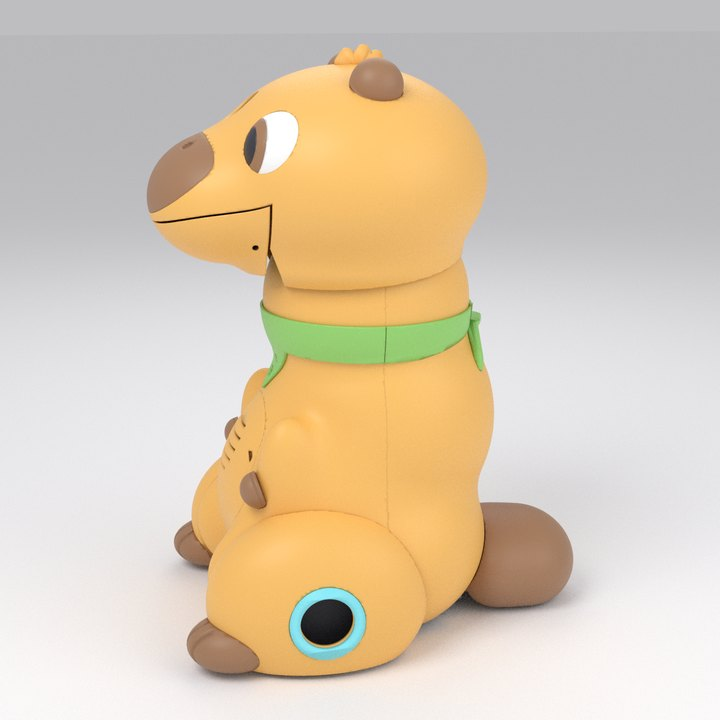
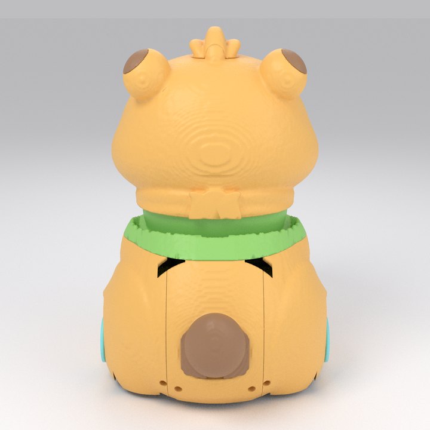
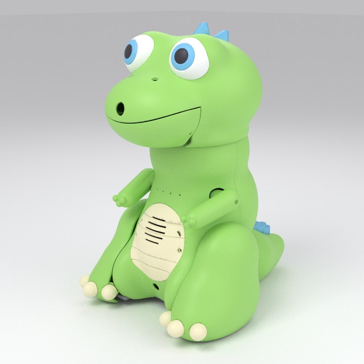
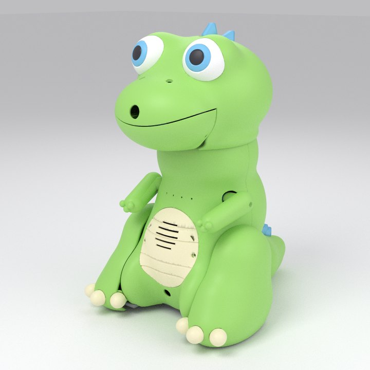
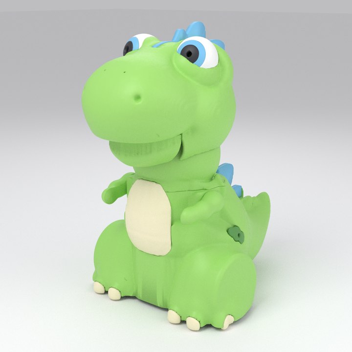
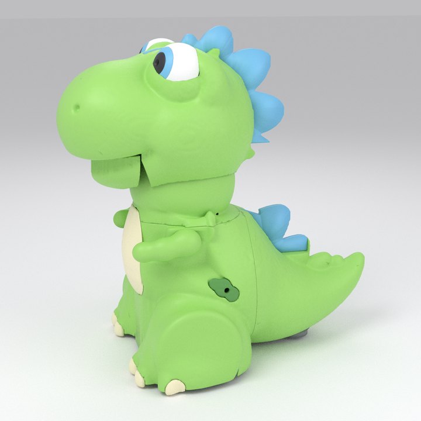

¿El robot quedó parecido al dibujo? Mira cada vista, con números
Tú eliges un robot por su aspecto. Pero entre el dibujo y la pieza impresa entran el motor, la batería y los tornillos, y el robot puede quedar muy distinto de lo que viste: en la primera versión, el carpincho quedó con el cuello largo. Aquí ves el carpincho y el dinosaurio antes y después, junto al dibujo de referencia, y aprendes a leer la regla que mide cuánto se acercaron.
El carpincho en tres cuartos, con la misma cámara. Son renders del modelo, no fotos: todavía no se imprimió nada.
En resumen
Los dos animales de robos-impressos surgieron de un dibujo de referencia. En la versión 1.0.2, la carcasa se diseñó con formas redondeadas simples sobre un esqueleto común a ambos, y el resultado quedó lejos del dibujo. En la versión 1.1.2, la forma pasó a partir de una malla 3D, generada en la computadora a partir del propio dibujo, y se rehízo el esqueleto de cada animal para que cupiera dentro de ella. Para saber si realmente mejoró, y no solo a simple vista, el proyecto mide el contorno del robot frente al contorno del dibujo, vista por vista. El carpincho pasó de 0,777 a 0,920 y el dinosaurio, de 0,814 a 0,871, en una escala de 0 a 1. Esta página muestra las imágenes, los números y también lo que el número no puede ver.
Las imágenes del robot son renders: imágenes de computadora hechas a partir de los archivos de impresión. El dibujo de referencia es una ilustración y aparece aquí solo para comparar. Los otros robots y las páginas de cada uno están en la guía general de los robots.
Cómo leer el número
IoU: cuánto de un contorno coincide con el otro
IoU es la sigla en inglés de “intersección sobre unión”. Colocas la silueta del robot sobre la silueta del dibujo y divides el área que ambas tienen en común entre el área que ocupan juntas.
solo en el dibujo de referencia solo en el robot en ambos
IoU = verde ÷ (verde + rojo + azul)
La escala va de 0 a 1
Con 1, los dos contornos son idénticos. Con 0, ni siquiera se tocan. En esta página, 0,777 es el carpincho de cuello largo y 0,920 es el carpincho cuya diferencia quedó en el borde y el lazo del pañuelo.
Lo que ve la regla
Solo el contorno, en cuatro vistas. Antes de comparar, las dos siluetas quedan con la misma altura, la base en la misma línea y el centro alineado. El tamaño real del robot no entra en el cálculo.
Lo que la regla no ve
El color, los ojos, la boca, las costuras, los agujeros y todo lo que queda dentro del contorno. Dos robots muy distintos de frente pueden tener el mismo número. Por eso las imágenes están aquí: el número confirma lo que ves, no lo reemplaza.
Es una regla estricta
No se conoce la cámara exacta del dibujo. Por eso, la regla parte de un ángulo acordado para cada vista, prueba los ángulos vecinos (hasta 25° a cada lado, de 5 en 5) y se queda con el mejor. Esto perdona un error de cámara, pero también oculta diferencias pequeñas. Una o dos milésimas son ruido; las diferencias grandes se ven en las imágenes.
El techo
Es la malla 3D cruda, generada en la computadora a partir del dibujo y medida con la misma regla. No llega a 1 porque el dibujo consta de cuatro ilustraciones que no coinciden perfectamente entre sí, y una malla tiene una sola forma. El robot todavía tiene ruedas, cortes y holguras: por lo general, queda por debajo del techo.
El objetivo
Se definió antes de medir el resultado, para que nadie eligiera la meta mirando el resultado: la mitad del camino entre el antes y el techo. La regla se aplica al promedio de las cuatro vistas. El objetivo por vista, en las tablas, es el mismo cálculo aplicado a cada vista.
🦫 Carpincho
Carpincho: de cuello largo a pera compacta
El dibujo es una pera: cuerpo ancho abajo y la cabeza pegada a él, sin cuello. El esqueleto anterior no lo permitía.
0,777antes (v1.0.2), promedio de las vistas
0,920después (v1.1.2)
0,926techo: la malla cruda del dibujo
0,852objetivo: la mitad del camino
Objetivo alcanzado. El robot recorrió 96 % del camino entre el antes y el techo.
El dibujo de referencia
Es la ilustración de la que partió el robot, en cuatro vistas. La regla compara el robot con cada una de ellas.
Ilustración de referencia del proyecto. No es una foto ni un render.
Antes y después, en las mismas vistas
Renders del modelo, con la misma cámara, uno al lado del otro. Debajo de cada imagen está el IoU de esa vista.
de frente
antes · IoU 0,783después · IoU 0,944
tres cuartos
antes · IoU 0,784después · IoU 0,908
de lado

antes · IoU 0,736después · IoU 0,906
de espaldas
antes · IoU 0,803

después · IoU 0,925
Los números, vista por vista
↔ en el celular, arrastra la tabla hacia un lado
Vista
Antes (v1.0.2)
Después (v1.1.2)
Techo
Objetivo
Ganancia
de frente
0,783
0,944
0,943
0,863
+0,161
tres cuartos
0,784
0,908
0,911
0,848
+0,124
de lado
0,736
0,906
0,925
0,831
+0,170
de espaldas
0,803
0,925
0,927
0,865
+0,122
promedio
0,777
0,920
0,926
0,852
+0,143
Vista en la que el robot marca un poco más que el techo: de frente. La diferencia es de milésimas y está dentro del ruido de la regla, que elige el mejor ángulo vecino para cada modelo.
La regla, lado a lado
Es la imagen que guarda el programa de medición. Cada fila es una vista: a la izquierda, el dibujo de referencia; en el medio, el modelo en la cámara que eligió la regla; a la derecha, las dos siluetas superpuestas. El rojo es lo que solo tiene el dibujo, el azul, lo que solo tiene el robot, y el verde, lo que tienen ambos.
Antes (v1.0.2)Después (v1.1.2)
Toca la imagen para ampliarla. El texto dentro de estas imágenes está en portugués. En el modelo del medio, la regla pinta las ruedas sobre la carcasa; en el robot quedan ocultas. El valor "ajustado" es una segunda medición, con un pequeño margen de escala y posición: las tablas de esta página usan el IoU sin ajuste. El promedio escrito en el título de la imagen puede diferir de la tabla en 1 milésima por redondeo.
Qué cambió por dentro y por qué
La forma viene del dibujo
Antes, la carcasa se dibujaba con formas redondeadas simples. Ahora, una malla 3D generada a partir del dibujo se convirtió en la piel del robot: la carcasa es esa piel con paredes de 2,4 mm, cortada en piezas.
Esqueleto bajo, solo para ella
En el esqueleto anterior, común a ambos animales, la articulación del cuello quedaba a 185 mm del suelo: de ahí el cuello largo. En el nuevo, bajó a 150 mm, con el servo que gira la cabeza acostado de lado.
Apoyo adelante
La cabeza es grande y queda adelante, y el peso también: el centro de masa cae delante del eje de las ruedas. La esfera de apoyo, que antes era una sola y estaba atrás, se convirtió en dos, adelante, debajo de las patas.
Carcasa en macetas
El torso en dos mitades, con las patas y la parte trasera separadas, dio paso a tres piezas grandes: cuerpo entero, puerta trasera y cuello. Cada una tiene la base plana sobre la cama y paredes que se elevan casi en vertical, por eso se imprime casi sin soportes. El cuello es la propia bandana verde.
Lo que todavía separa al carpincho del dibujo: el lazo de la bandana en la nuca, que se dejó afuera porque la cabeza, al inclinarse hacia arriba, pasa por su lugar, y la faceta plana que quedó allí. La lista de compras, los archivos y el montaje están en la página del carpincho.
🦖 Dinosaurio
Dinosaurio: patas adelante, cola atrás y las ruedas dentro de los muslos
El dinosaurio ya partía de una forma más cercana al dibujo, y su malla tiene un techo más bajo: quedaba menos recorrido para avanzar.
0,814antes (v1.0.2), promedio de las vistas
0,871después (v1.1.2)
0,897techo: la malla cruda del dibujo
0,855objetivo: la mitad del camino
Objetivo alcanzado. El robot recorrió 69 % del camino entre el antes y el techo.
El dibujo de referencia
Es la ilustración de la que partió el robot, en cuatro vistas. La regla compara el robot con cada una de ellas.
Ilustración de referencia del proyecto. No es una foto ni un render.
Antes y después, en las mismas vistas
Renders del modelo, con la misma cámara, uno al lado del otro. Debajo de cada imagen está el IoU de esa vista.
de frente
antes · IoU 0,875después · IoU 0,913
tres cuartos (a)

antes · IoU 0,808después · IoU 0,874
tres cuartos (b)

antes · IoU 0,787

después · IoU 0,862
de lado
antes · IoU 0,786

después · IoU 0,837
Los números, vista por vista
↔ en el celular, arrastra la tabla hacia un lado
Vista
Antes (v1.0.2)
Después (v1.1.2)
Techo
Objetivo
Ganancia
de frente
0,875
0,913
0,942
0,908
+0,038
tres cuartos (a)
0,808
0,874
0,888
0,848
+0,066
tres cuartos (b)
0,787
0,862
0,889
0,838
+0,075
de lado
0,786
0,837
0,870
0,828
+0,051
promedio
0,814
0,871
0,897
0,855
+0,057
La regla, lado a lado
Es la imagen que guarda el programa de medición. Cada fila es una vista: a la izquierda, el dibujo de referencia; en el medio, el modelo en la cámara que eligió la regla; a la derecha, las dos siluetas superpuestas. El rojo es lo que solo tiene el dibujo, el azul, lo que solo tiene el robot, y el verde, lo que tienen ambos.
Antes (v1.0.2)Después (v1.1.2)
Toca la imagen para ampliarla. El texto dentro de estas imágenes está en portugués. En el modelo del medio, la regla pinta las ruedas sobre la carcasa; en el robot quedan ocultas. El valor "ajustado" es una segunda medición, con un pequeño margen de escala y posición: las tablas de esta página usan el IoU sin ajuste. El promedio escrito en el título de la imagen puede diferir de la tabla en 1 milésima por redondeo.
Qué cambió por dentro y por qué
La forma viene del dibujo
Como en el carpincho, la carcasa dejó de dibujarse con formas simples: es la piel de la malla 3D generada a partir del dibujo, con paredes de 2,4 mm, cortada en piezas.
Esqueleto solo para él, con las ruedas dentro de los muslos
En la nueva forma, las patas quedan adelante y la cola atrás. El eje de las ruedas pasa por los muslos y la carcasa cubre las ruedas. Con el esqueleto del carpincho, el dinosaurio se caería hacia atrás.
Apoyo atrás y cuello más corto
El centro de masa queda detrás del eje de las ruedas, así que la esfera de apoyo queda atrás, debajo de la base de la cola. La articulación del cuello bajó de 185 a 164 mm del suelo para que el cuello quede corto, como en el dibujo.
Carcasa en macetas y boca casi recta
El cuerpo, la parte trasera y el cuello se imprimen de pie, con el borde plano sobre la cama, en lugar del torso en dos mitades. La malla venía con la boca abierta: se cerró el hueco y la boca se abre 12°. La mandíbula queda al ras de la esfera del cuello, y cada grado adicional haría que la barbilla retrocediera contra ella.
Lo que todavía separa al dinosaurio de la malla: la boca cerrada, la franja recta entre las patas y los brazos lisos. La lista de compras, los archivos y el montaje están en la página del dinosaurio.
Método
Cómo se mide
El protocolo es el mismo para el antes, el después y la malla. Si la regla cambiara a mitad del proceso, los números no serían comparables.
Cada vista del dibujo se convierte en una silueta: el personaje recortado del fondo.
El modelo se dibuja sin perspectiva, solo con las piezas impresas, las ruedas y la esfera de apoyo, en la pose neutra y sin los componentes de la fase 2.
Las dos siluetas tienen la misma altura (400 píxeles), la base en la misma línea y el centro alineado.
La regla parte del ángulo acordado para la vista, prueba los ángulos cercanos (25° a cada lado, de 5 en 5, y cinco alturas de cámara) y guarda el IoU más alto.
El número de cada animal es el promedio simple de las vistas.
Dinosaurio: el objetivo es 0,855. El cálculo usa los valores sin redondear (0,8137 y 0,8972). Si se hiciera con los números ya redondeados de las tablas (0,814 y 0,897), daría 0,856: la diferencia se debe solo al redondeo.
Los números se obtienen de comparacao/semelhanca.json, generado por el programa comum/cad/comparar.py. La tabla completa, con el ángulo elegido para cada vista, está en comparacao/semelhanca.md (en portugués).
Para repetir la medición se necesitan las imágenes de referencia. No forman parte del repositorio: solo se publicaron las que se muestran en esta página.
Los otros dos robots
Los robots cuadrados tienen un número, pero no tienen esta historia
El robot cuadrado de mesa se midió en una sola vista y no tuvo malla: quedó en 0,797 (estaba en 0,755), por debajo del objetivo de 0,855. El robot cuadrado con ruedas es nuevo y no tiene dibujo propio. El número y la explicación están en la página de cada uno.
 antes (v1.0.2)
antes (v1.0.2) después (v1.1.2)
después (v1.1.2)